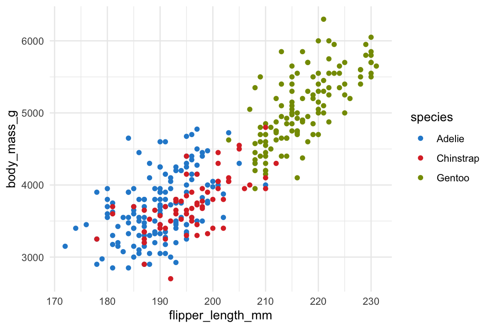
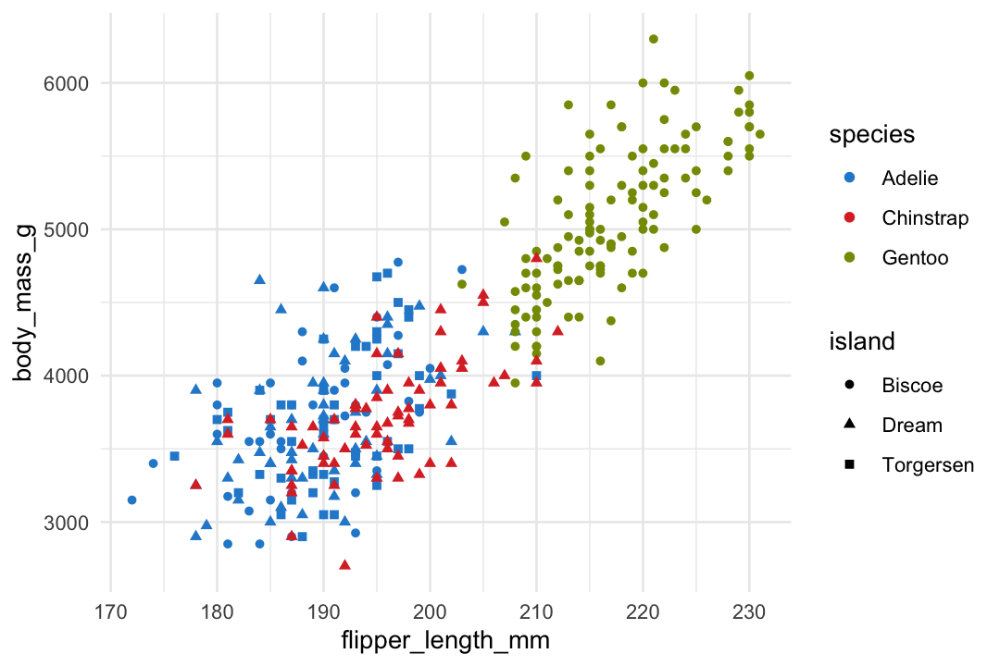
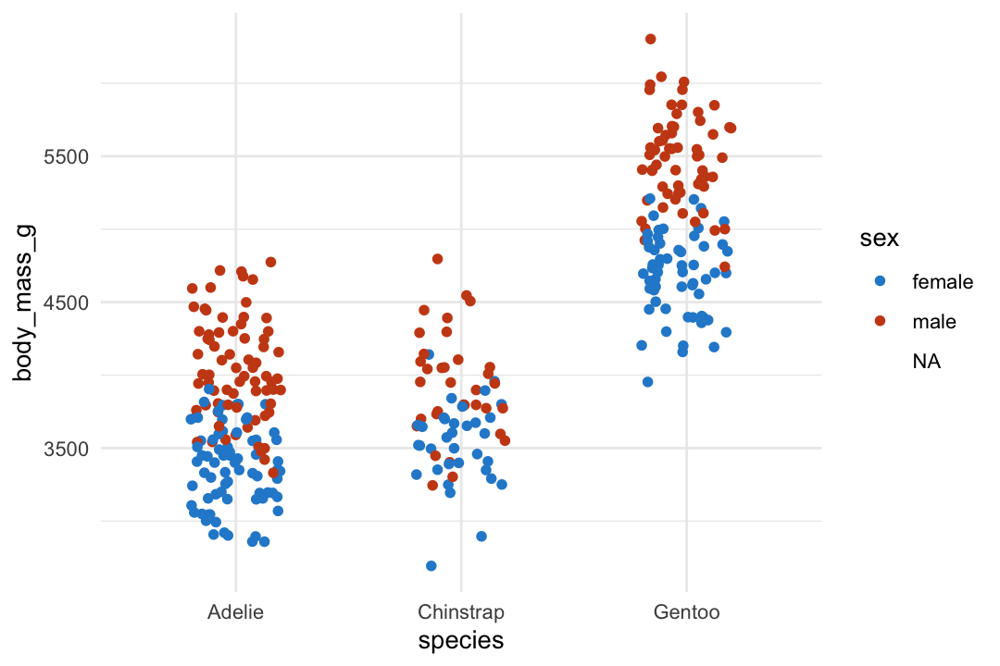
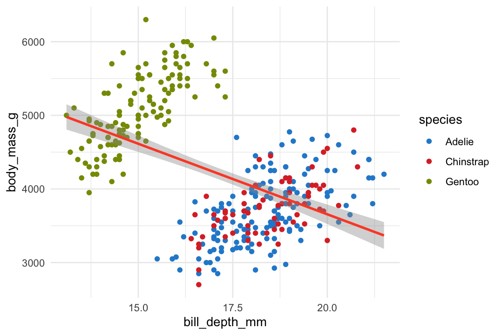
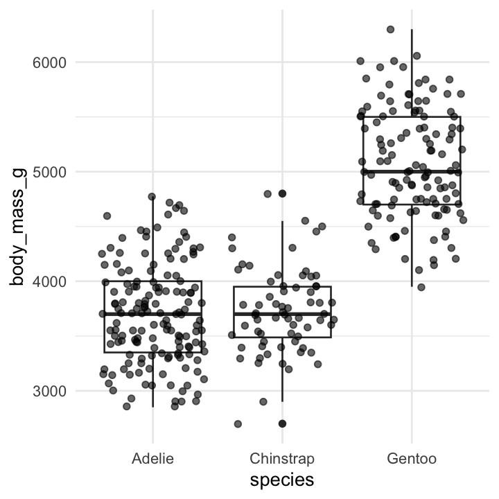
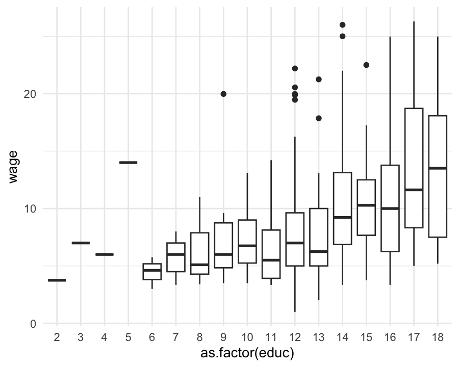
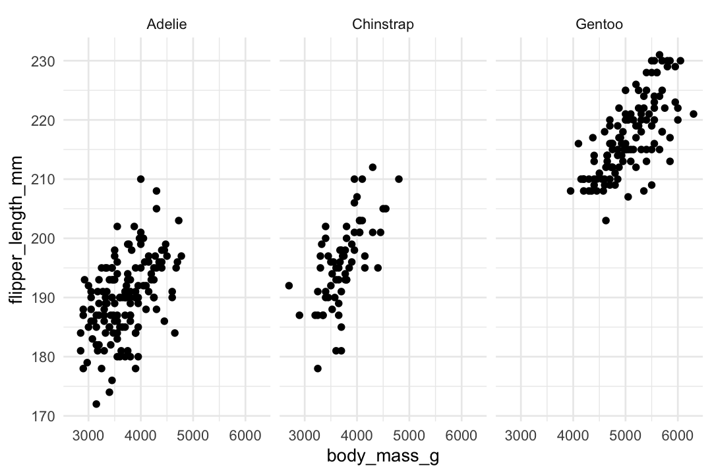
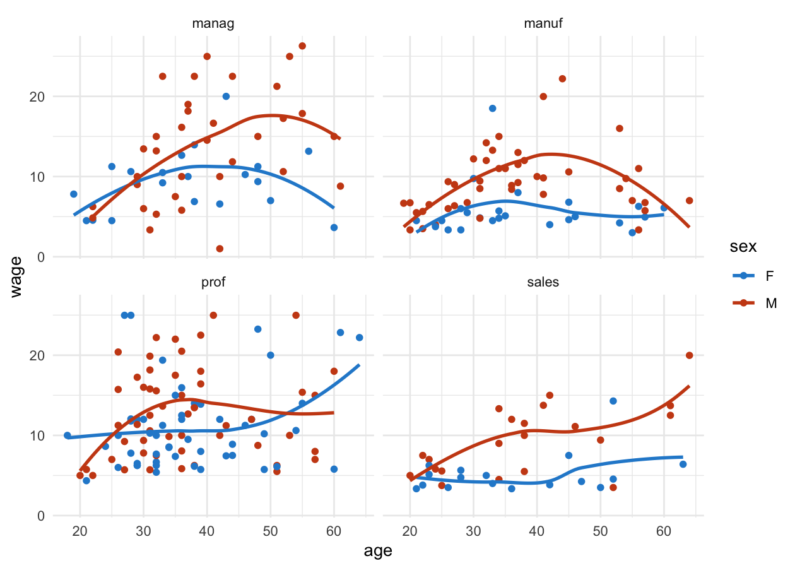

library(tidyverse)
library(palmerpenguins)Visualize
R for Data Science by Wickham & Grolemund
Exploratory vs. Confirmatory Analysis
- 데이터 시각화는 탐색적 분석에 더 초점이 맞춰져 있음.
- 소위 data mining이라고 부르는 데이터 내의 숨겨진 패턴을 찾고 분석하는 탐색적 분석은 전통적인 통계에서 discouraging되어 왔음.
- 확률에 근거한 통계 이론은 데이터를 수집하기 전에 가설을 세우고 그 가설을 confirm하는 방식을 취함.
- 논란의 여지가 있지만, 원칙적으로 가설에 근거해 수집한 자료가 가설과 일치하는지를 확인하는 작업에서는 자료를 두 번 이상 들여다 보지 않아야 함.
- 그럼에도 불구하고, 탐색적 분석은 behind doors에서 이루어지거나 새로운 가설을 세우기 위한 방편으로 이용되었음.
- 또한, 매우 엄격한 잣대를 적용하는 상황에서도 통계 이론의 특성으로 인해 기본적인 탐색적 분석은 반드시 선행되어야 함.
- 연구 가설의 진위를 탐구할 때, 탐색적 분석에서 쉽게 빠질 수 있는 편향성(bias)는 항상 조심할 필요가 있고, 확신을 위해서는 새로이 자료를 수집해서 가설을 재검증할 필요가 있음.
탐색적 분석을 위해서는 다양한 시각화 기술이 요하나, 일반적인 통계 분석을 위해서 필요로하는 최소한으로 제한하고자 함.
또한, 복잡한 통계치를 살펴볼 때, 직접 시각화를 하기보다는 패키지가 알아서 시각화를 해주기 때문에 자세히 알지 못해도 무방함.
좀 더 상세한 내용에 대해서는
- R for Data Science/Visualize
- ggplot2 book
- ggplot2 extensions
통계치 표현: ggstatsplot, ggpubr - Data Visualization with R by Rob Kabacoff : 적절한 밸런스
- ggplot2 cheatsheet : pdf 다운로드
Note
충분히 큰 데이터의 경우, 일정량의 데이터 가령 1/4을 따로 떼어놓고, 3/4만으로 탐색적 분석을 통해 모델을 만든 후, 따로 떼어놓은 1/4로 (가설)검증을 하는 cross-validation 방법이 있는데, machine leanring분야에서는 기본적인 process.
Cross-validation 방식에는 여러 변형들이 있음; e.g. 데이터를 4등분하여 각각 4번 위의 방식을 반복하여 합치는 방식, 3가지 (training, validation, test sets)로 나누어 분석
Basics
penguins |>
print() # 무시# A tibble: 344 × 8
species island bill_length_mm bill_depth_mm flipper_l…¹ body_…² sex year
<fct> <fct> <dbl> <dbl> <int> <int> <fct> <int>
1 Adelie Torgersen 39.1 18.7 181 3750 male 2007
2 Adelie Torgersen 39.5 17.4 186 3800 fema… 2007
3 Adelie Torgersen 40.3 18 195 3250 fema… 2007
4 Adelie Torgersen NA NA NA NA NA 2007
5 Adelie Torgersen 36.7 19.3 193 3450 fema… 2007
6 Adelie Torgersen 39.3 20.6 190 3650 male 2007
# … with 338 more rows, and abbreviated variable names ¹flipper_length_mm,
# ²body_mass_gglimpse(penguins)Rows: 344
Columns: 8
$ species <fct> Adelie, Adelie, Adelie, Adelie, Adelie, Adelie, Adel…
$ island <fct> Torgersen, Torgersen, Torgersen, Torgersen, Torgerse…
$ bill_length_mm <dbl> 39.1, 39.5, 40.3, NA, 36.7, 39.3, 38.9, 39.2, 34.1, …
$ bill_depth_mm <dbl> 18.7, 17.4, 18.0, NA, 19.3, 20.6, 17.8, 19.6, 18.1, …
$ flipper_length_mm <int> 181, 186, 195, NA, 193, 190, 181, 195, 193, 190, 186…
$ body_mass_g <int> 3750, 3800, 3250, NA, 3450, 3650, 3625, 4675, 3475, …
$ sex <fct> male, female, female, NA, female, male, female, male…
$ year <int> 2007, 2007, 2007, 2007, 2007, 2007, 2007, 2007, 2007…Variabels:
- species: a penguin’s species (Adelie, Chinstrap, or Gentoo).
- flipper_length_mm: length of a penguin’s flipper, in millimeters.
- body_mass_g: body mass of a penguin, in grams.
더 자세한 사항은 ?penguins
ggplot을 이용한 시각화는 주로 3가지 성분으로 나뉨
data: 사용할 데이터
mapping: data의 변수들을 어떤 특성에 mapping할 것인지 specify
geom: 어떤 시각화 개체(graphical objects)로 데이터를 표현할 것인지 specify
# x, y축에 변수를 mapping
ggplot(
data = penguins,
mapping = aes(x = flipper_length_mm, y = body_mass_g)
)
# point로 데이터를 표시: scatterplot
ggplot(
data = penguins,
mapping = aes(x = flipper_length_mm, y = body_mass_g)
) +
geom_point()
#> Warning: Removed 2 rows containing missing values (`geom_point()`).Warning message:
“Removed 2 rows containing missing values (`geom_point()`).”
Note
실제로 is.na()함수를 이용해 missing을 확인해보면,
penguins |>
select(species, flipper_length_mm, body_mass_g) |>
filter(is.na(body_mass_g) | is.na(flipper_length_mm)) # true, false의 boolean type
#> # A tibble: 2 × 3
#> species flipper_length_mm body_mass_g
#> <fct> <int> <int>
#> 1 Adelie NA NA
#> 2 Gentoo NA NAAdding aesthetics and layers
# spcies에 color (aesthetics)를 mapping
ggplot(
data = penguins,
mapping = aes(x = flipper_length_mm, y = body_mass_g, color = species)
) +
geom_point()Warning message:
“Removed 2 rows containing missing values (`geom_point()`).”
위에서 species마다 다른 색을 입혀서 다른 패턴이 나타나는지 확인해 볼 수 있음
ggplot2는 + 기호로 연결하여 계속 layer를 추가할 수 있음.
다음은 trendline 혹은 fitted line이라고 부르는 경향성을 확인해 볼 수 있는 라인의 layer를 추가함
ggplot(
data = penguins,
mapping = aes(x = flipper_length_mm, y = body_mass_g, color = species)
) +
geom_point() +
geom_smooth()`geom_smooth()` using method = 'loess' and formula = 'y ~ x'
Warning message:
“Removed 2 rows containing non-finite values (`stat_smooth()`).”
Warning message:
“Removed 2 rows containing missing values (`geom_point()`).”
Note
Data에 fitted curve를 구하는 방식에는 여러 방법이 있음
- Linear fit: 1차 함수형태인 직선으로 fit
- Smoothing fit
- Polynominal fit: n차 다항함수형태로 fit
- Loess/lowess: locally estimated/weighted scatterplot smoothing
- GAM: generalized additive model
- Spine: piece-wise polynominal regression
나중에 좀 더 자세히 알아봄
ggplot2는 플랏의 대상에 다음과 같은 속성을 부여할 수 있음
color, size, shape, fill, alpha
ggplot(
data = penguins,
mapping = aes(x = flipper_length_mm, y = body_mass_g, color = species, shape = island)
) +
geom_point() Warning message:
“Removed 2 rows containing missing values (`geom_point()`).”
Tip
어떤 속성을 어떤 변수에 할당하는 것이 적절한지를 선택하는 것이 기술
Categorical vs. continuous
color와 같은 속성은 카테고리 변수가 좀 더 적절하나, 연속변수에서도 적용될 수 있음
ggplot(
data = penguins,
mapping = aes(x = flipper_length_mm, y = body_mass_g, color = bill_length_mm)
) +
geom_point() Warning message:
“Removed 2 rows containing missing values (`geom_point()`).”
반대로, x, y에 카테고리 변수를 mapping하여 scatterplot을 그리면 다음과 같은 overploting의 문제가 생김
ggplot(
data = penguins,
mapping = aes(x = species, y = body_mass_g, color = sex)
) +
geom_point() Warning message:
“Removed 11 rows containing missing values (`geom_point()`).”Overplotting
Overplotting의 문제를 해결하는 방식은 주로
alpha(투명도)를 조정하거나 랜덤하게 흐뜨려그리는geom_jitter()를 사용
- 애초에 겹치지 않게 그리는 방법도 있음: e.g. beeswarm plot
ggplot(
data = penguins,
mapping = aes(x = species, y = body_mass_g, color = sex)
) +
geom_jitter(width = .2) # jitter의 정도: width, heightWarning message:
“Removed 11 rows containing missing values (`geom_point()`).”
ggplot(
data = penguins,
mapping = aes(x = species, y = body_mass_g, color = sex)
) +
geom_jitter(width = .2, alpha = .5) # alpha: 투명도 0 ~ 1Warning message:
“Removed 11 rows containing missing values (`geom_point()`).”
Geometric objects
ggplot2는 40가지 넘는 geom objects를 제공함.
주로 통계를 위해 쓰일 geom들은
geom_point,geom_smooth()geom_boxplot()geom_histogram(),geom_freqploy(),geom_density()
Global vs. local mapping
ggplot(
data = penguins,
mapping = aes(x = flipper_length_mm, y = body_mass_g)
) +
geom_point(mapping = aes(color = species)) + # color mapping은 geom_point에만 적용
geom_smooth() # 맨 위의 mapping에 있는 global mapping을 inherit`geom_smooth()` using method = 'loess' and formula = 'y ~ x'
Warning message:
“Removed 2 rows containing non-finite values (`stat_smooth()`).”
Warning message:
“Removed 2 rows containing missing values (`geom_point()`).”
ggplot(
data = penguins,
mapping = aes(x = flipper_length_mm, y = body_mass_g)
) +
geom_smooth(mapping = aes(linetype = sex), se = FALSE)`geom_smooth()` using method = 'loess' and formula = 'y ~ x'
Warning message:
“Removed 2 rows containing non-finite values (`stat_smooth()`).”
ggplot(
data = penguins,
mapping = aes(x = bill_depth_mm, y = body_mass_g)
) +
geom_point(mapping = aes(color = species)) + # color mapping은 geom_point에만
geom_smooth(method = lm) # 맨 위의 mapping에 있는 global mapping을 inherit, method: fitted line의 종류
ggplot(
data = penguins,
mapping = aes(x = bill_depth_mm, y = body_mass_g)
) +
geom_point(mapping = aes(color = species)) +
geom_smooth(method = lm) + # 맨 위의 mapping에 있는 global mapping을 inherit
geom_smooth(mapping = aes(color = species), method = lm) # color mapping 추가
aes() 내부, 외부에서의 mapping
ggplot(data = penguins, mapping = aes(x = flipper_length_mm, y = body_mass_g)) +
geom_point(mapping = aes(color = species)) # aesthetic color에 변수를 mapping
ggplot(data = penguins, mapping = aes(x = flipper_length_mm, y = body_mass_g)) +
geom_point(color = "skyblue") + # geom의 color 속성에 색을 지정
geom_smooth(color = "orangered")

Statistical transformations
ggplot2는 편의를 위해 통계치를 구해 표시해주는데,
경우에 따라 직접 통계치를 계산 후 새로 얻는 데이터로 그리는 것이 유리함
Distribution
geom_histogram(), geom_freqploy(), geom_density()
# y축에 표시되는 통계치들이 계산됨
ggplot(data = penguins, mapping = aes(x = body_mass_g)) +
geom_histogram(binwidth = 100) # binwidth vs. bins
ggplot(data = penguins, mapping = aes(x = body_mass_g, colour = sex)) +
geom_freqpoly(binwidth = 100)
ggplot(data = penguins, mapping = aes(x = body_mass_g, colour = sex)) +
geom_density(bw = 100) # bw: band width
Boxplot
Boxplot은 분포에 대한 정보은 줄어드나, 카테고리별로 간결하게 비교되는 장점
boxplot()


ggplot(data = penguins, mapping = aes(x = species, y = body_mass_g)) +
geom_boxplot()Warning message:
“Removed 2 rows containing non-finite values (`stat_boxplot()`).”
ggplot(data = penguins, mapping = aes(x = species, y = body_mass_g)) +
geom_boxplot() +
geom_jitter(alpha = .6)Warning message:
“Removed 2 rows containing non-finite values (`stat_boxplot()`).”
Warning message:
“Removed 2 rows containing missing values (`geom_point()`).”
cps <- as_tibble(mosaicData::CPS85)
cps |>
filter(wage < 30) |>
ggplot(aes(x = as.factor(educ), y = wage)) + # as.factor(): numeric을 factor로 변환
geom_boxplot()
ggplot(data = penguins, mapping = aes(x = species, y = body_mass_g, fill = sex)) + # color는 box의 테두리 색, fill은 내부색
geom_boxplot()Warning message:
“Removed 2 rows containing non-finite values (`stat_boxplot()`).”
Barplot
Barplot은 여러방식으로 쓸 수 있는데, 문법이 조금 복잡하고, 수업에서 거의 사용하지 않을 예정이므로 웹사이트를 참조
R for Data Science/Layers/Statistical transformations
ggplot(data = penguins) +
geom_bar(mapping = aes(x = species)) # 개수
Discretize
연속 변수를 임의의 구간으로 나누어 카테고리처럼 적용하기 할 수 있음
cut_width(), cut_number(), cut_interval()
cut_width(): 구간의 길이를 정함cut_number(): 동일한 갯수의 관측값을 갖는 n개의 그룹cut_interval(): 동일한 길이의 n개의 그룹
ggplot(
data = penguins,
mapping = aes(
x = bill_length_mm, y = bill_depth_mm,
color = cut_interval(body_mass_g, 3) # body_mass_g의 값을 3개의 동일한 길이의 구간으로 나눔
)
) +
geom_point() +
geom_smooth(se = FALSE, span = 1) # span: smoothing 정도 조절`geom_smooth()` using method = 'loess' and formula = 'y ~ x'
Warning message:
“Removed 2 rows containing non-finite values (`stat_smooth()`).”
Warning message:
“Removed 2 rows containing missing values (`geom_point()`).”
Facets
카테고리 변수들이 지니는 카테고리들(레벨)로 나누어 그리기
facet_wrap(), facet_grid()
ggplot(data = penguins, aes(x = body_mass_g, y = flipper_length_mm)) +
geom_point() +
facet_wrap(~species) # species의 레벨로 나뉘어짐Warning message:
“Removed 2 rows containing missing values (`geom_point()`).”
facet_wrap()은 레벨이 많아지면 다음의 facet_grid()와는 다르게 화면크기에 맞춰 다음 줄로 넘어감
ggplot(data = penguins, aes(x = body_mass_g, y = flipper_length_mm)) +
geom_point() +
facet_grid(sex ~ species) # 행과 열에 각각 sex, speciesWarning message:
“Removed 2 rows containing missing values (`geom_point()`).”
ggplot(
data = penguins,
aes(x = body_mass_g, y = flipper_length_mm, color = sex) # color 추가
) +
geom_point(alpha = .6) +
facet_grid(island ~ species) # 행과 열에 각각 sex, speciesWarning message:
“Removed 11 rows containing missing values (`geom_point()`).”
Important
Facet과 color 중 어떤 방식으로 표현하는 것이 유리한가? 밸런스를 잘 선택!
ggplot(data = penguins, aes(x = body_mass_g, y = flipper_length_mm)) +
geom_point() +
facet_wrap(~species)
ggplot(data = penguins, aes(x = body_mass_g, y = flipper_length_mm, color = species)) +
geom_point()Warning message:
“Removed 2 rows containing missing values (`geom_point()`).”
Warning message:
“Removed 2 rows containing missing values (`geom_point()`).”

Labels
labs() 안에 각 요소별로 지정
ggplot(
data = penguins,
mapping = aes(x = flipper_length_mm, y = body_mass_g)
) +
geom_point(aes(color = species, shape = island)) +
geom_smooth() +
labs(
title = "Body mass and flipper length",
subtitle = "Dimensions for Adelie, Chinstrap, and Gentoo Penguins",
x = "Flipper length (mm)", y = "Body mass (g)",
color = "Species", shape = "Island"
)
Note
앞으로는 pipe operator와 함께, 축약 형태로
data =대신 첫번째 argument 위치에 data frame이 위치mapping =은 두번째 argument 위치에aes()을 위치
ggplot(data = penguins, mapping = aes(x = flipper_length_mm, y = body_mass_g)) +
geom_point()은 다음과 같이
ggplot(penguins, aes(x = flipper_length_mm, y = body_mass_g)) +
geom_point()Pipe operator로 다음과 연결될 수 있음
penguins |>
filter(!is.na(sex) & island != "Torgersen") |> # 성별이 missing이 아니고, Torgersen섬은 제외
ggplot(aes(x = body_mass_g, y = flipper_length_mm, color = sex)) +
geom_point() +
geom_smooth() +
facet_wrap(~island)`geom_smooth()` using method = 'loess' and formula = 'y ~ x'
Examples
이전에 다뤘던 CPS85 데이터로 보면,
cps <- as_tibble(mosaicData::CPS85) # mosaicData package의 CPS85 데이터셋
cps |>
print() # 생략!# A tibble: 534 × 11
wage educ race sex hispanic south married exper union age sector
<dbl> <int> <fct> <fct> <fct> <fct> <fct> <int> <fct> <int> <fct>
1 9 10 W M NH NS Married 27 Not 43 const
2 5.5 12 W M NH NS Married 20 Not 38 sales
3 3.8 12 W F NH NS Single 4 Not 22 sales
4 10.5 12 W F NH NS Married 29 Not 47 clerical
5 15 12 W M NH NS Married 40 Union 58 const
6 9 16 W F NH NS Married 27 Not 49 clerical
# … with 528 more rowscps |>
ggplot(aes(x = wage, color = married)) +
geom_freqpoly(binwidth=1)
cps |>
ggplot(aes(x = wage, color = married)) +
geom_freqpoly(binwidth = 1) +
facet_wrap(~sex)
cps |>
ggplot(aes(x = married, y = wage)) +
geom_boxplot(width = .2) +
geom_jitter(width = .2, alpha = .2, color = "red") +
scale_y_continuous(label = scales::label_dollar()) # y축 scale의 변경
cps |>
ggplot(aes(x = married, y = wage, fill = sex)) +
geom_boxplot()

cps |>
filter(wage < 30) |>
ggplot(aes(x = sector, y = wage, fill = sex)) +
geom_boxplot()
cps |>
filter(wage < 30) |>
ggplot(aes(x = sector, y = wage, fill = sex)) +
geom_boxplot() +
facet_grid(married ~ .) 
plot <- cps |>
filter(wage < 30) |>
ggplot(aes(x = age, y = wage)) +
geom_point(alpha = .6) +
geom_smooth()
plot`geom_smooth()` using method = 'loess' and formula = 'y ~ x'
Important
확대, 축소 혹은 제한된 범위에서 보려면 다음 2가지를 구분해야 함
coord_cartesian() vs. xlim() or ylim()
plot + coord_cartesian(xlim = c(18, 40)) # zoom in`geom_smooth()` using method = 'loess' and formula = 'y ~ x'
plot + xlim(18, 40) # data crop`geom_smooth()` using method = 'loess' and formula = 'y ~ x'
Warning message:
“Removed 181 rows containing non-finite values (`stat_smooth()`).”
Warning message:
“Removed 181 rows containing missing values (`geom_point()`).”
cps |>
filter(wage < 30 & sector %in% c("manag", "manuf", "prof", "sales")) |>
ggplot(aes(x = age, y = wage, color = sex)) +
geom_point() +
geom_smooth(se = FALSE, span = 1) +
facet_wrap(~sector)`geom_smooth()` using method = 'loess' and formula = 'y ~ x'